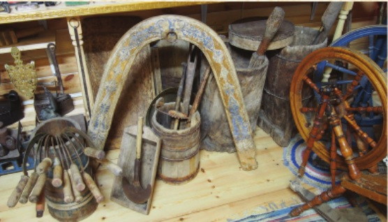
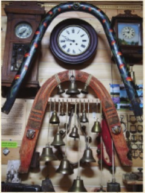

Музей ямщиков


Музей был создан в 2016 г. современным поколением Кулагиных-Пшенниковых в Якутске. История рода Кулагиных и Пшенниковых связана с развитием Иркутско-Якутского почтового тракта. Это были первые государевы ямщики на средней Лене. Пшенниковы были основателями Неленксой и Кочегарской, а Кулагины - Дельгейской почтовых станций.
Сегодня под музей переоборудована часть подсобного помещения. Музей оформлен в русском деревянном стиле. Экспонатами музея являются предметы хозяйственного обихода, орудия труда для земледелия и хлебопашества (различные серпы, цепа для ручной молотьбы, ступы, жернова для ручного помола, самодельные камни для ручных топил, деревянная борона с кованными зубьями, различные конструкции прялок, углевые утюги, рубели, весовые приборы XIX века и многое другое. Так как это семейный музей, он содержит большой архив из сотен писем, открыток, телеграмм. В музее также демонстрируется большое количество экспонатов советского времени. Это фотоаппараты, знамена, чернильницы, перьевые ручки, проигрыватели, патефоны, пластинки и тд.
Центральное место в музее занимает экспозиция, посвященная предкам - государевым ямщикам. Это дуга XIX века с закрепленными на ней тремя колокольчиками тоже XIX века, поддужные колокольчики разных размеров, очень редкие бубенцы, ботало для скота, элементы украшений сбруи. Хранители музея успели сохранить важный практический ямщицкий навык - технологически правильное закрепление колокольчиков старинным оригинальным способом крепления. Благодаря энтузиастам, крепким семейным связям, у жителей и гостей Якутска сегодня есть возможность прикоснуться к истории государевых ямщиков, которые внесли свой вклад в развитие культуры Якутии.